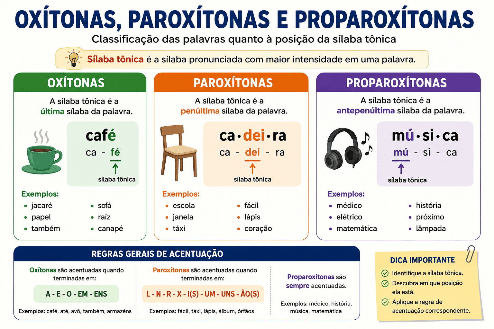

Oxítonas, Paroxítonas e Proparoxítonas: o que são, regras, exemplos e acentuação
As oxítonas, paroxítonas e proparoxítonas fazem parte dos conteúdos mais cobrados em provas de Língua Portuguesa, como o PAES UEMA, o ENEM, vestibulares e concursos públicos. Saber identificar a sílaba tônica das palavras é essencial para aplicar corretamente as regras de acentuação gráfica, melhorar a leitura, escrever com segurança e interpretar textos.
Neste guia completo, você aprenderá como identificar cada classificação, conhecerá as principais regras de acentuação, verá diversos exemplos práticos e entenderá por que esse assunto é tão importante nas avaliações.

O que são oxítonas, paroxítonas e proparoxítonas?
Toda palavra possui uma sílaba pronunciada com maior intensidade, chamada de sílaba tônica. Conforme a posição dessa sílaba, as palavras são classificadas em:
- Oxítonas;
- Paroxítonas;
- Proparoxítonas.
Essa classificação é a base para compreender as regras de acentuação gráfica da língua portuguesa e aparece frequentemente em questões de gramática e interpretação textual.
O que é sílaba tônica?
A sílaba tônica é aquela pronunciada com maior intensidade durante a fala. Ela não deve ser confundida com o acento gráfico, pois nem toda sílaba tônica recebe acento.
Observe alguns exemplos:
- computador → com-pu-ta-dor
- cadeira → ca-dei-ra
- médico → mé-di-co
Perceba que apenas uma sílaba recebe maior destaque na pronúncia. É justamente essa posição que determina a classificação da palavra.
Oxítonas
O que são palavras oxítonas?
As oxítonas são palavras cuja sílaba tônica é a última.
Exemplos:
- café
- cipó
- jacaré
- papel
- hotel
- rapaz
- cantar
- também
- ninguém
Separação silábica:
- ca-fé
- ja-ca-ré
- pa-pel
- can-tar
Em todos esses exemplos, a última sílaba é pronunciada com maior intensidade.
Regras de acentuação das oxítonas
Recebem acento gráfico as palavras oxítonas terminadas em:
- a(s)
- e(s)
- o(s)
- em
- ens
Exemplos:
- sofá
- cajá
- café
- você
- cipó
- paletó
- armazém
- parabéns
Oxítonas que não recebem acento
Nem todas as palavras oxítonas são acentuadas. Quando suas terminações não se enquadram nas regras da acentuação gráfica, elas permanecem sem acento.
Exemplos:
- papel
- hotel
- cantor
- animal
- arroz
- feliz
Paroxítonas
O que são palavras paroxítonas?
As paroxítonas são palavras cuja sílaba tônica é a penúltima. Esse é o grupo mais numeroso da língua portuguesa.
Exemplos:
- mesa
- livro
- cadeira
- escola
- difícil
- lápis
- álbum
- vírus
- caráter
Separação silábica:
- me-sa
- li-vro
- di-fí-cil
- lá-pis
Regras de acentuação das paroxítonas
Recebem acento gráfico as paroxítonas terminadas em:
- l
- n
- r
- x
- ps
- i
- is
- us
- um
- uns
- ã
- ão
- ditongo
Exemplos:
- fácil
- difícil
- hífen
- tórax
- bíceps
- júri
- lápis
- vírus
- álbum
- órfã
- órfão
- história
- série
Paroxítonas que não recebem acento
A maioria das palavras da língua portuguesa é paroxítona e não recebe acento gráfico.
- casa
- escola
- cadeira
- planeta
- menino
- professora
Proparoxítonas
O que são palavras proparoxítonas?
As proparoxítonas são palavras cuja sílaba tônica é a antepenúltima.
Exemplos:
- médico
- música
- matemática
- gramática
- árvore
- fenômeno
- lâmpada
- público
Regra das proparoxítonas
Existe uma regra muito importante da acentuação gráfica:
Todas as palavras proparoxítonas são acentuadas.
Exemplos:
- química
- físico
- histórico
- geográfico
- pedagógico
- trânsito
- lógico
- sílaba
Como identificar rapidamente a classificação de uma palavra
Para identificar corretamente a classificação de uma palavra, siga este passo a passo:
- Separe as sílabas da palavra.
- Identifique qual sílaba recebe maior intensidade na pronúncia.
- Observe sua posição.
Se a sílaba tônica estiver:
- na última sílaba → a palavra é oxítona;
- na penúltima sílaba → a palavra é paroxítona;
- na antepenúltima sílaba → a palavra é proparoxítona.
Exemplos de oxítonas
As palavras oxítonas apresentam a sílaba tônica na última posição. A seguir, veja alguns exemplos bastante utilizados na língua portuguesa:
- café
- cipó
- jacaré
- urubu
- avó
- avô
- também
- ninguém
- paletó
- sofá
- dominó
- cantor
- papel
- hotel
- rapaz
- Brasil
Observe que algumas dessas palavras recebem acento gráfico, enquanto outras não. Isso ocorre porque a acentuação depende das regras ortográficas e não apenas da posição da sílaba tônica.
Exemplos de paroxítonas
As paroxítonas possuem a penúltima sílaba como tônica. Como representam a maioria das palavras da língua portuguesa, é comum encontrá-las em textos de diferentes gêneros.
- casa
- mesa
- escola
- cadeira
- livro
- janela
- árvore
- fácil
- difícil
- lápis
- álbum
- vírus
- caráter
- órfão
- história
Nem todas as paroxítonas são acentuadas. Na verdade, apenas aquelas que apresentam determinadas terminações previstas pelas regras da acentuação recebem acento gráfico.
Exemplos de proparoxítonas
As proparoxítonas são facilmente identificadas porque possuem a antepenúltima sílaba como tônica e, sem exceção, recebem acento gráfico.
- médico
- música
- matemática
- gramática
- fenômeno
- química
- físico
- histórico
- geográfico
- pedagógico
- trânsito
- sílaba
- lâmpada
- público
- lógico
Como todas as proparoxítonas são acentuadas, essa é considerada uma das regras mais simples da acentuação gráfica da língua portuguesa.
Tabela comparativa
A tabela abaixo resume as diferenças entre oxítonas, paroxítonas e proparoxítonas.
| Classificação | Posição da sílaba tônica | Exemplo |
|---|---|---|
| Oxítona | Última sílaba | café |
| Paroxítona | Penúltima sílaba | cadeira |
| Proparoxítona | Antepenúltima sílaba | médico |
Diferença entre classificação e acentuação gráfica
Um erro bastante comum entre estudantes é acreditar que classificação das palavras e acentuação gráfica significam a mesma coisa. Na realidade, trata-se de conceitos diferentes.
A classificação depende exclusivamente da posição da sílaba tônica na palavra.
Já a acentuação gráfica depende das regras estabelecidas pela ortografia oficial da língua portuguesa.
Observe os exemplos:
- papel → oxítona sem acento.
- café → oxítona com acento.
As duas palavras pertencem à mesma classificação, porém apenas uma atende às regras para receber acento gráfico.
Erros mais comuns
Achar que toda palavra oxítona possui acento
Esse é um dos equívocos mais frequentes. Existem diversas oxítonas que não recebem acento gráfico.
- papel
- cantor
- hotel
- animal
- rapaz
Pensar que toda paroxítona é acentuada
A maioria das palavras da língua portuguesa é paroxítona e não possui acento gráfico.
- cadeira
- escola
- menino
- janela
- planeta
Esquecer que toda proparoxítona é acentuada
Essa regra não possui exceções. Sempre que uma palavra for proparoxítona, ela deverá receber acento gráfico.
- médico
- gramática
- química
- histórico
- lâmpada
Como esse assunto aparece no PAES UEMA e no ENEM
As provas do PAES UEMA, do ENEM e de diversos concursos costumam abordar esse conteúdo de maneira contextualizada, relacionando a classificação das palavras às regras de acentuação gráfica e à interpretação textual.
Entre as habilidades mais cobradas estão:
- identificar a sílaba tônica das palavras;
- classificar palavras em oxítonas, paroxítonas e proparoxítonas;
- aplicar corretamente as regras de acentuação gráfica;
- identificar erros de ortografia em textos;
- comparar palavras com e sem acento gráfico;
- analisar os efeitos da acentuação na leitura e na escrita.
É comum que as bancas apresentem textos, poemas, reportagens ou tirinhas para que o candidato identifique palavras acentuadas e justifique a regra aplicada. Por isso, compreender esse conteúdo vai muito além da memorização: é necessário saber aplicar as regras em diferentes contextos.
Dicas para memorizar as classificações
Memorizar a classificação das palavras torna-se muito mais fácil quando você associa cada grupo à posição da sílaba tônica. Em vez de decorar apenas conceitos, procure identificar a sílaba pronunciada com maior intensidade sempre que encontrar uma palavra nova.
- Oxítona: a sílaba tônica é a última.
- Paroxítona: a sílaba tônica é a penúltima.
- Proparoxítona: a sílaba tônica é a antepenúltima.
- Toda palavra proparoxítona é acentuada.
- A maior parte das palavras da língua portuguesa é paroxítona.
Outra estratégia eficiente consiste em praticar diariamente a separação silábica e a identificação da sílaba tônica. Com o tempo, esse processo se torna automático, facilitando tanto a escrita quanto a resolução de questões de provas.
Resumo
A classificação das palavras em oxítonas, paroxítonas e proparoxítonas depende exclusivamente da posição da sílaba tônica.
| Classificação | Sílaba tônica | Recebe acento? |
|---|---|---|
| Oxítona | Última | Depende da terminação. |
| Paroxítona | Penúltima | Depende da terminação. |
| Proparoxítona | Antepenúltima | Sempre. |
Conclusão
Compreender a diferença entre oxítonas, paroxítonas e proparoxítonas é essencial para dominar a acentuação gráfica da língua portuguesa. Esse conhecimento permite escrever corretamente, interpretar textos com maior precisão e resolver questões de gramática com mais segurança.
Além de ser um conteúdo frequente no PAES UEMA, no ENEM, em vestibulares e concursos públicos, a identificação da sílaba tônica também contribui para uma pronúncia mais adequada e para o desenvolvimento das competências de leitura e produção textual.
Sempre que estudar novas palavras, procure identificar sua sílaba tônica antes mesmo de verificar se ela possui acento gráfico. Esse hábito fortalece o aprendizado e facilita a aplicação das regras de acentuação em qualquer contexto.
Quiz — Oxítonas, Paroxítonas e Proparoxítonas (nível intermediário)
Questão 1 — A palavra "café" é classificada como:
Questão 2 — Em qual alternativa todas as palavras são paroxítonas?
Questão 3 — Qual das palavras abaixo é uma proparoxítona?
Questão 4 — Toda palavra proparoxítona:
Questão 5 — Em qual alternativa todas as palavras são oxítonas?
Questão 6 — A palavra "difícil" é classificada como:
Questão 7 — Complete corretamente:
A palavra "música" possui a sílaba tônica na __________________.
Questão 8 — Qual alternativa apresenta apenas palavras acentuadas por serem proparoxítonas?
Questão 9 — A palavra "jacaré" é:
Questão 10 — A classificação das palavras em oxítonas, paroxítonas e proparoxítonas depende:
Perguntas Frequentes sobre Oxítonas, Paroxítonas e Proparoxítonas
O que são palavras oxítonas?
São palavras cuja sílaba tônica é a última, como café, papel e também.
O que são palavras paroxítonas?
São palavras cuja sílaba tônica é a penúltima, como cadeira, escola e difícil.
O que são palavras proparoxítonas?
São palavras cuja sílaba tônica é a antepenúltima, como médico, música e matemática.
Toda proparoxítona é acentuada?
Sim. Essa é uma das principais regras da acentuação gráfica da língua portuguesa: todas as palavras proparoxítonas recebem acento.
Como identificar a sílaba tônica?
Pronuncie a palavra naturalmente e observe qual sílaba é dita com maior intensidade. Ela será a sílaba tônica.
Qual é a diferença entre sílaba tônica e acento gráfico?
A sílaba tônica é aquela pronunciada com maior intensidade. Já o acento gráfico é um sinal utilizado apenas quando as regras ortográficas determinam sua aplicação. Nem toda sílaba tônica recebe acento.
Como saber se uma palavra é oxítona, paroxítona ou proparoxítona?
Basta identificar a posição da sílaba tônica. Se ela estiver na última sílaba, a palavra é oxítona; se estiver na penúltima, é paroxítona; se estiver na antepenúltima, é proparoxítona.
Por que toda proparoxítona é acentuada?
Porque essa é uma regra fixa da ortografia da língua portuguesa. Diferentemente das oxítonas e das paroxítonas, todas as proparoxítonas recebem acento gráfico, sem exceções.
Esse conteúdo é cobrado no PAES UEMA e no ENEM?
Sim. A classificação das palavras e as regras de acentuação aparecem frequentemente em questões de gramática, interpretação de textos, ortografia e análise linguística no PAES UEMA, no ENEM, em vestibulares e em concursos públicos.